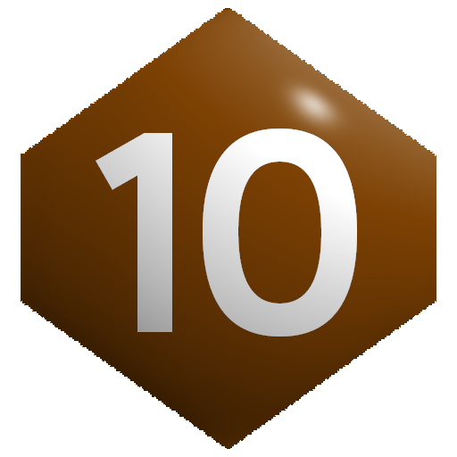
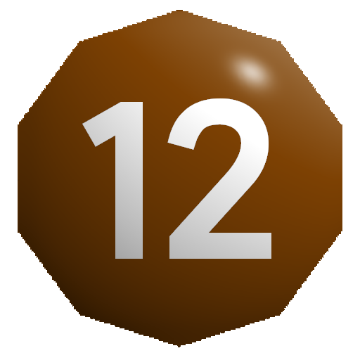

Формула
При одинаковых рангах сравниваются абсолютные значения бросков.
D = |RankMax - RankMin|
Победа в состязании разных рангов
Для победы меньшего ранга необходимо:
- Результат > (D + 1) × max(Ранг большего).
- Результат > Результата большего
Пример: Человек () vs Огр (

): D=1, max()=10 → порог = (1+1)×10 = 20. Человек должен выбросить >20 и больше Огра.
Проигрыш в состязании разных рангов
Для автоматического проигрыша большего ранга нужно, чтобы
- Результат > (D + 1) × max(Ранг меньшего).
- Результат > Результата меньшего
Пример: Огр () vs Человек (): D=1, max()=8 → порог = (1+1)×8 = 16. Если Огр выбросит <16, он проигрывает.
Таблица
Левое число означает победу слабейшего. Правое число означает проигрыш сильнейшего.
| Больший | Больший | Больший | Больший | Больший  |
|
|---|---|---|---|---|---|
| Меньший | — | 12/8 | 24/12 | 40/16 | 60/20 |
| Меньший | — | — | 16/12 | 30/18 | 48/24 |
| Меньший | — | — | — | 20/16 | 36/24 |
| Меньший | — | — | — | — | 24/20 |
| Меньший | — | — | — | — | — |